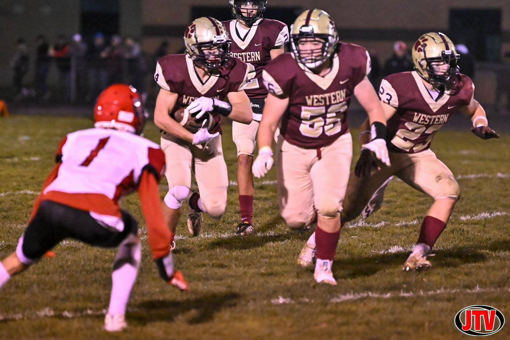
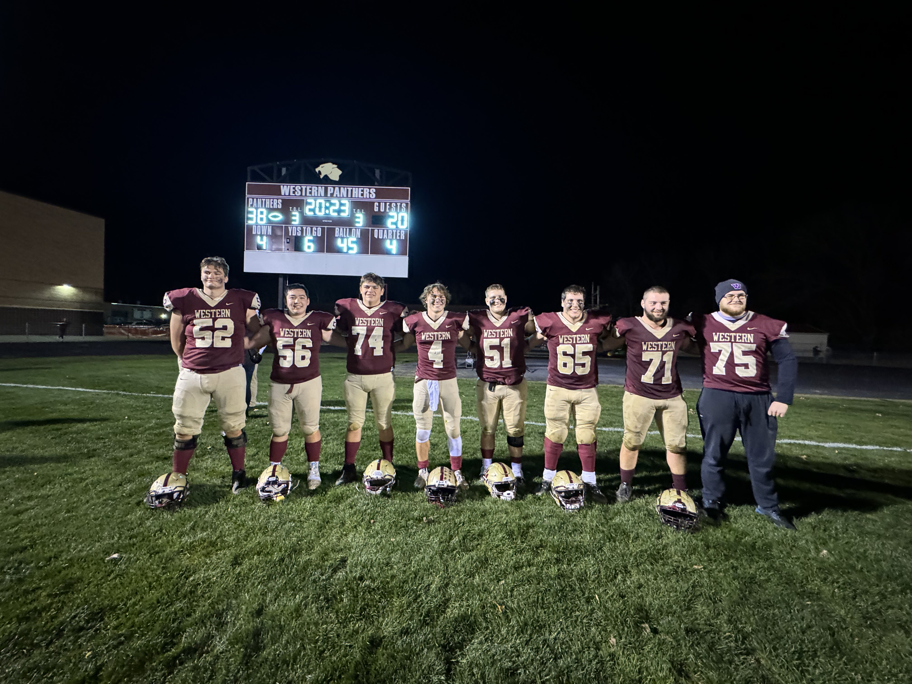
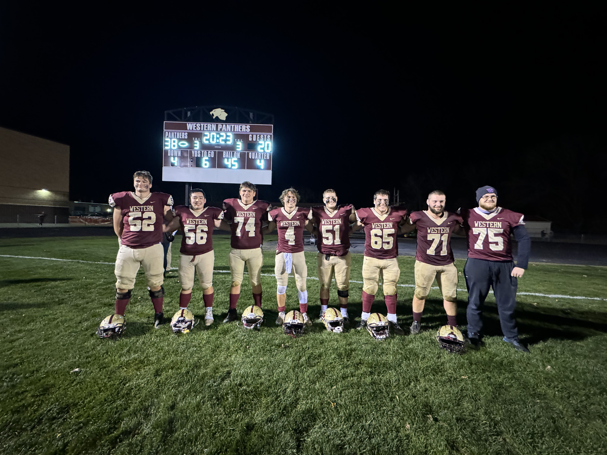
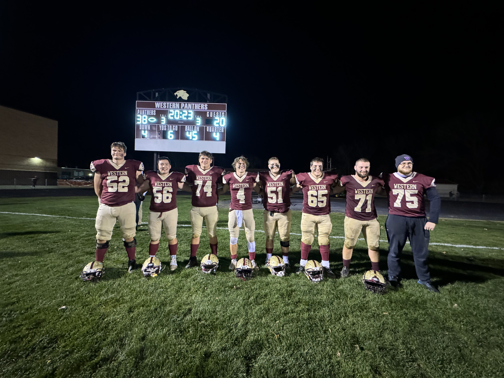

For three years of high school, I have been a part of the football team under the guidance of Coach Rulewitz. Throughout this time, our team has experienced a multitude of highs and lows, from celebrating district championships to facing heartbreaking losses against Jackson High and Hastings on a mere one-yard difference. Despite the challenges, my loyalty to the team has remained steadfast, as demonstrated by my commitment to its growth and improvement. This aligns with Benchmark 16-69, which emphasizes demonstrating loyalty to the team and showing dedication to its development. As an aspiring engineer, this experience has been invaluable, as it has taught me the importance of teamwork, perseverance, and collective effort in achieving success. These qualities are not only vital on the football field but also essential for navigating the challenges and complexities of the engineering profession, where collaboration and commitment to continuous improvement are key to achieving goals and driving innovation.

 


